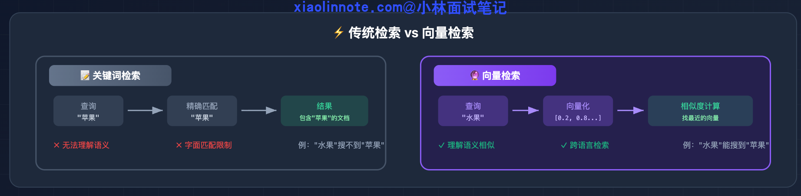
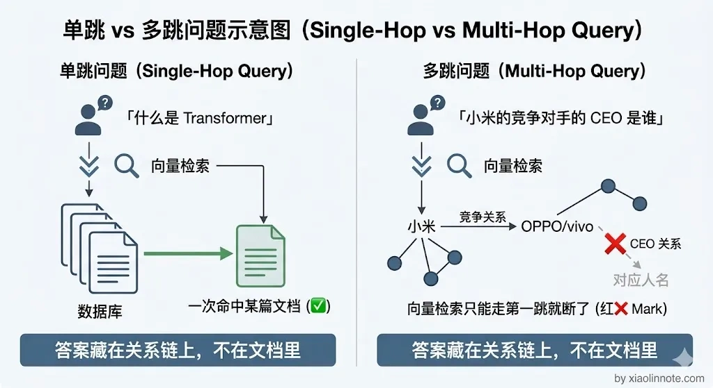
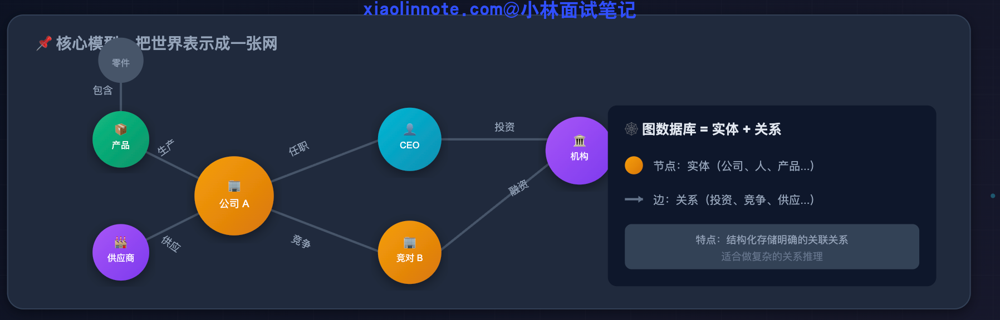
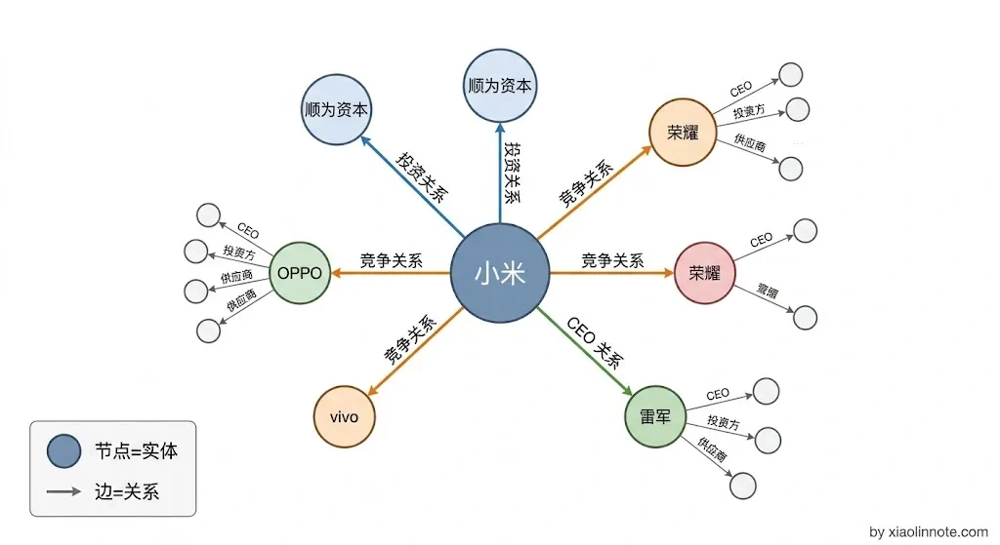
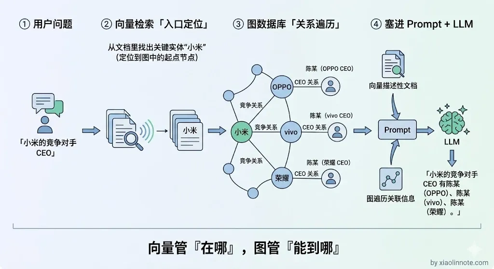
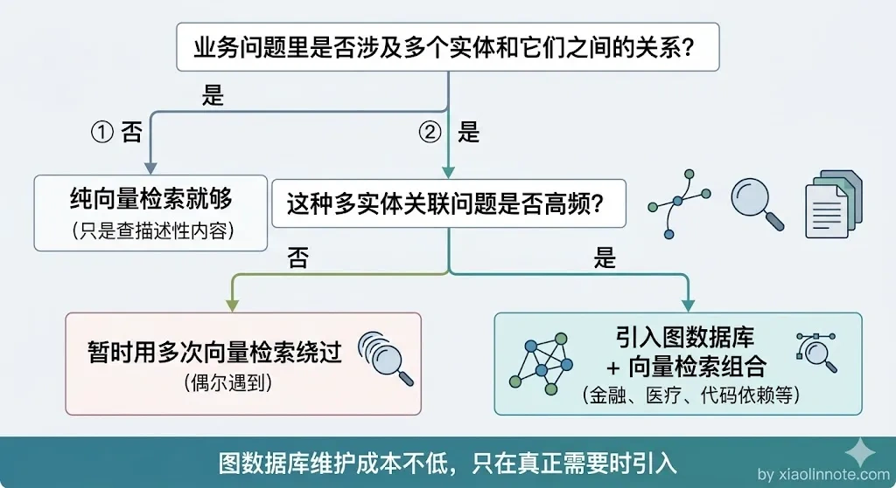

在什么场景下，你会选择使用图数据库来增强传统的向量检索？
👔面试官：在什么场景下，你会选择使用图数据库来增强传统的向量检索？
🙋♂️我：图数据库？我觉得向量检索已经够用了吧，大部分场景都能覆盖，图数据库主要是搞社交网络那种，和 RAG 关系不大。
👔面试官：如果只做一次相似度召回，可能找不到多个实体之间的关联路径。用户问「A 公司的投资方和 B 公司有什么交集」，你会如何保证实体、关系和路径都被正确解析？
🙋♂️我：呃，那我可能会多检索几次，把关键词拆开分别搜，应该也能拼出答案吧？
👔面试官：多检索几次可能仍缺少关系约束；图数据库能显式保存和遍历实体关系，但也不是自动正确推理，向量检索与图查询需要按问题类型互补并做证据校验。
这个问题考察的是你对向量检索能力边界的认知，以及图数据库在什么场景下能补上这个短板。下面我来详细分析。
💡 简要回答
我的判断是，当业务问题稳定地涉及多个实体之间的显式关系、路径约束或跨文档聚合时，才考虑引入图数据库或其他图结构存储；先用标注问题确认简单的多路/迭代检索是否已经足够。
向量检索主要按相似度召回局部候选，本身不维护“实体—关系—实体”的可遍历结构；但通过多轮检索、结构化工具或 LLM 规划，它也可以参与多步任务。因此不能绝对地说它“只能单跳”，更准确的边界是：没有显式关系模型时，路径完整性、去重和约束验证需要额外实现。比如公司 A 的投资方与公司 B 的交集，答案可能分散在多份文档中。
这时候图数据库就能发挥作用，沿着关系边一跳一跳地把关联信息收集回来。我接触过的典型场景有企业关系分析、医疗知识图谱、代码依赖关系查询、供应链溯源这些。
📝 详细解析
向量检索能做什么，做不到什么
先从向量检索的工作原理说起。向量检索做的事情是：把用户的问题转成一个向量，然后在知识库里找「向量最接近」的文档片段，把它们拼到 prompt 里给 LLM 用。

这套逻辑在很多场景下效果很好，比如「什么是 Transformer」「Python 的 GIL 是什么」这类问题，答案可能主要在某一段文档里，向量检索可以先返回相关候选。
但是，向量检索结果默认是按相似度排序的候选，不会自动保证沿某类关系逐跳展开，也不会天然维护路径、方向、时间和关系类型约束。需要这些保证时，图或结构化查询更合适。

你可能会想，那我多检索几次不就行了？
多检索几次并非绝对不行：可以由规则、LLM 或代码解析上一跳实体，再发起下一次检索。但如果没有显式关系和路径状态，系统难以保证遍历完整、方向正确、没有重复或越权；这正是图结构可以提供的约束。
来看几个向量检索真的答不上来的问题。
「小米的主要竞争对手的 CEO 是谁」，这个问题需要先识别竞争关系，再查询 CEO，并保留关系来源、时间和实体消歧；单次相似度召回难以保证这些步骤，但迭代检索或图查询都可能实现。
「治 A 疾病的药和治 B 疾病的药有没有药物相互作用」，答案藏在「药物 -> 作用靶点 -> 相互作用」这条多节点路径上，没有一篇文档会把这个结论直接写出来。
「这个函数直接和间接依赖的所有第三方库有哪些安全漏洞」，需要沿代码依赖链一层层展开,每一跳都是新的查询。
这些问题的共同特征是：答案可能不在某一个文档里，而是需要组合多个实体、关系和来源。图数据库的价值在于把关系显式化，并提供可约束遍历、路径查询和结构化过滤；它不是自动正确推理器。
图数据库是干什么的，为什么能解决这个问题
向量检索做不到多跳遍历，这个能力缺口恰恰是图数据库的强项。图数据库专门用来存「实体和关系」，它把世界表示成一张网：每个节点是一个实体（比如公司、人、疾病、药物），每条边是一种关系（比如「投资」「竞争」「治疗」「副作用」）。

有了这张网之后，就可以做受约束的图遍历：从一个节点出发，按关系类型、方向、跳数、时间和权限沿边查询，并保留路径与来源。这能补充向量检索的结构化关系能力，但边的正确性、完整性和更新时效仍要验证。

很多人以为图数据库是向量检索的“升级版”，其实不是。图查询语言擅长实体、关系、路径和结构化过滤，对模糊语义召回不一定擅长；某些图系统也提供向量索引，但那是另一种检索能力，与图遍历的正确性边界要分开评估。
比如用户问「手机充电慢怎么办」，这种问题没有明确的实体关系可以遍历，图数据库帮不上忙，但向量检索可以从知识库里找到语义相近的故障排查文档。所以实际系统里，这两种技术是互补的，不是替代关系。
向量检索 + 图数据库的组合用法
既然两者是互补的，那具体怎么搭配使用呢？
两者组合起来的一种工作流是：向量检索或实体识别先作为“入口”，用户问「小米的竞争对手 CEO 是谁」，先定位实体、别名、版本和来源，再定位到图中的“ 小米”节点。若实体已由结构化输入给出，也可以跳过向量入口。
接下来，图数据库接力做受限关系遍历：「小米」-> 竞争关系 -> 候选公司 -> CEO 关系 -> 对应人名，并返回每条路径的来源、有效期和权限信息。关系类型、方向和时间条件要由查询计划明确，不能让模型无约束地任意跳。
最终，把向量证据、图路径和原始来源合并，去重、过滤权限、标记冲突后，再交给 LLM 生成带引用答案；图路径本身也应可追溯到文档证据。

打个比方，向量检索像是「导航定位」，帮你找到出发点在哪；图遍历像是「沿着路线一站一站走」，帮你把沿途经过的所有站点信息都收集起来。前者解决「在哪」的问题，后者解决「能到哪」的问题，合在一起才能给出完整答案。
这样，LLM 拿到的上下文既有语义相关的文档片段，也有沿关系链追出来的关联信息，两者互补，回答就完整了。
哪些场景真的需要图数据库
理解了两者的组合方式，接下来的问题就很实际了：什么场景下值得花精力引入图数据库？不是所有 RAG 系统都需要上图数据库，它主要在以下几类场景有价值。
企业关系分析是典型候选。金融、投资领域的股权、任职和竞争关系可能分散在多份文档中；图查询可以表达路径、方向、时间和关系类型，但结果质量取决于抽取、实体消歧、数据新鲜度和来源审计，不能承诺固定查询时延或自动正确。
医疗关系查询也可能受益于图结构，但这是高风险领域：疾病、症状、药物、基因关系必须有权威来源、版本、时间和人工/规则校验，不能只靠 LLM 抽取后直接用于诊疗建议。图遍历可帮助组织候选路径，不能替代临床验证。
代码知识库同样是图结构候选：函数调用、模块依赖和版本关系可以支持“直接/间接调用”查询，但仍需结合静态分析、构建产物和版本分支，不能只从文本猜关系。供应链的批次与上下游关系也适合结构化存储，前提是事件、时间和来源完整。
什么时候不值得上图数据库
看了上面的场景，你可能会觉得图数据库这么好用，是不是所有 RAG 都该上一个？
别急，图数据库的代价不小：你需要用 LLM 做「实体抽取」和「关系抽取」来把非结构化文档转成图结构，这个过程成本高、容易出错，而且后续维护图结构比维护向量库复杂得多。
如果用户的问题大多数是「找某个概念的解释」「某个功能怎么用」，向量检索加上 Rerank 已经够用了，强行上图数据库是过度设计。
判断要不要用图数据库的一个起点是：问题是否反复要求多个实体之间的关系、路径、聚合或约束遍历，且这些关系能被可靠抽取/维护。最终还要比较图存储与关系型递归查询、结构化索引、迭代检索的成本和收益；描述性问答可能只需向量/词法检索。

🎯 面试总结
回到面试官追问的「多检索几次能不能拼出答案」，答案是：可以通过规划器和状态实现，但没有显式关系模型时更难保证路径完整与约束正确。
向量检索主要返回相似候选，不天然提供实体关系和有约束的多跳遍历；图数据库的核心价值是显式保存实体、关系、路径与来源，并执行可控遍历。两者都需要实体消歧、权限过滤和证据审计。
两者的组合方式是向量检索做入口定位实体，图数据库接力做关系遍历，最终合并上下文给 LLM。
选择标准应综合关系问题占比、路径/时间/权限约束、数据质量、更新频率、查询延迟、运维能力和可解释性；是否涉及多个实体只是起点，不是自动上图的充分条件。